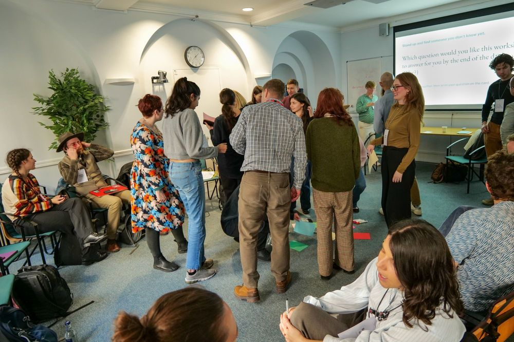
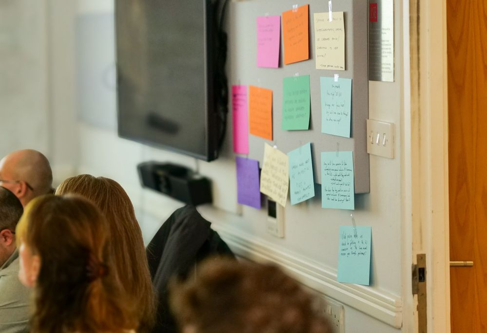
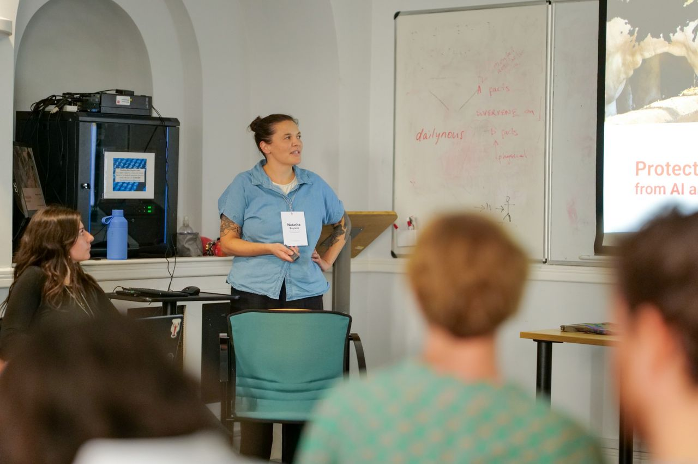
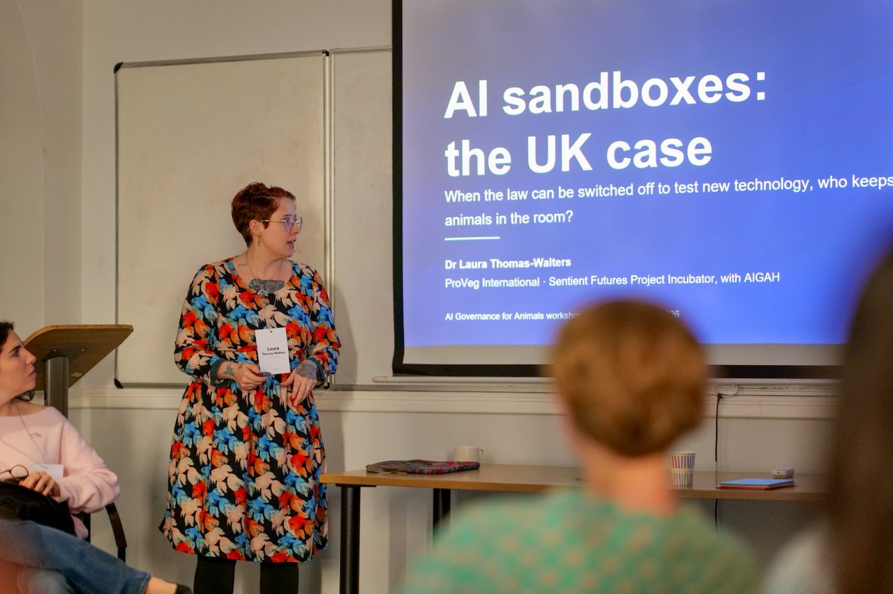
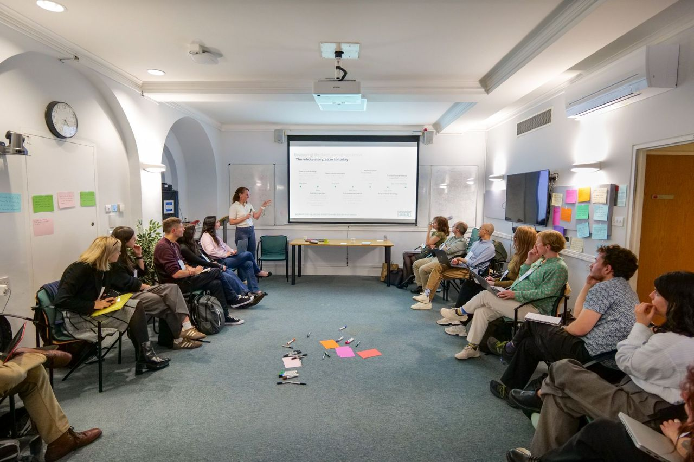
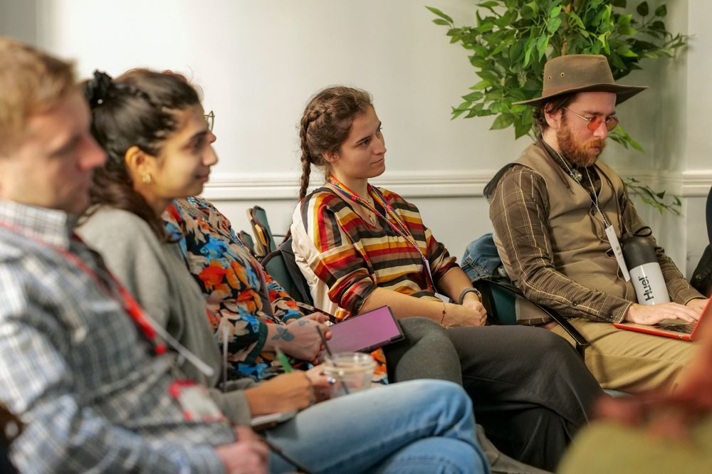
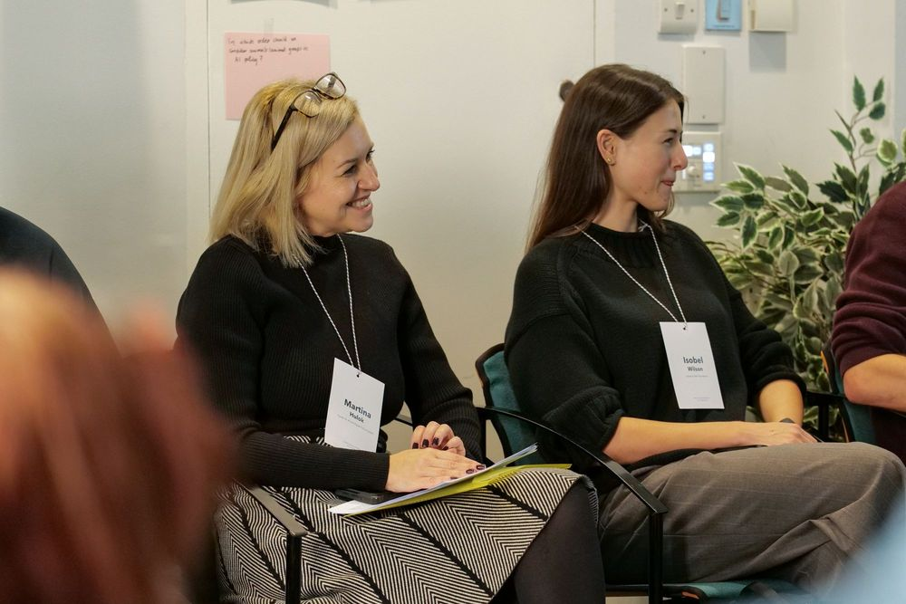

AI Governance for Animals: London workshop, 30 October 2026
About the workshop
On Friday 30 October 2026, the AI Governance for Animals Hub (AIGAH) held a workshop at the London School of Economics on AI governance and what it means for animal advocacy. More than twenty people took part. Some of them work on AI governance for animals, and others work in neighbouring fields such as AI policy, animal law and welfare science, in several countries and organisations. We are grateful to Prof Jonathan Birch and the Jeremy Coller Centre for Animal Sentience for hosting us at LSE.
I founded AIGAH in 2026 to bring animals into the decisions now being made about AI in the EU and the UK. AIGAH is funded by The Navigation Fund, and our first year covers farmed animals. We sort this work into three layers: the general-purpose AI models that the big AI companies develop, the “narrow” AI systems that farms, slaughterhouses and fish farms run, and the use of AI by regulators to enforce existing animal welfare law. Across all three layers, our main first policy ask is that relevant information about animals reaches regulators and the public.
Only a small number of people work on these questions so far. The idea of the workshop was to bring people together so that we could learn what others are doing, begin to work out what to do together, and avoid duplicating efforts. We started with six short talks and then held two working sessions, one on the EU’s Code of Practice for general-purpose AI (the GPAI Code) and one on next steps for the field.


Six talks
“Protecting animals: from AI and with AI”

Dr Natasha Boyland, Research Officer for Animals and AI at the Jeremy Coller Centre for Animal Sentience at LSE, presented two parts of the Centre’s work. She began with aquaculture, where more than 80 AI products were on the market in July 2025, mainly for salmon and shrimp. AI could help to detect welfare problems earlier and to improve welfare assessment and auditing. It could also fail with lethal consequences, make signs of poor welfare seem normal, and facilitate and/or increase production in intensive systems in which good welfare is hard to achieve. Natasha sees engaging with certification schemes as one feasible way of encouraging more responsible, welfare-positive AI use, because they could set requirements for AI. She is working on this with the Aquatic Life Institute. She also mentioned related work with the investor network FAIRR.
Natasha then turned to enforcement. According to the Animal Law Foundation, only 2.2% of UK farms were inspected at least once in 2024. Since 2018, English slaughterhouses have had to run CCTV wherever live animals are present, but very little of the footage is reviewed, and in 2024/25 only 23% of recorded breaches of welfare rules were found through CCTV review. Natasha proposed making AI-assisted review of all this footage mandatory, using systems that flag incidents for a person to review and that produce aggregated welfare data for regulators. Such technology exists, and some European slaughterhouses already use it voluntarily. She also mentioned a joint event with the Animal Law Foundation on AI and enforcement, at LSE on 3 December 2026, and the Jeremy Coller Centre’s conference with a focus on animals and AI on 17–18 May 2027.
“AI sandboxes: the UK case”

Dr Laura Thomas-Walters, Head of Impact at ProVeg International, spoke about the Regulating for Growth Bill, which was announced in the King’s Speech of May 2026. It would allow existing rules to be relaxed for a limited time so that new technologies, including AI, can be tested in real-world settings, in what are known as regulatory sandboxes. The government has twice listed the protections that such trials would keep, and animals appear in neither list. In its call for evidence on an AI Growth Lab, the government gives as one reason for sandboxing that some regulations “needlessly assume” that a person and not AI will do the work. Laura pointed out that animal protection law rests on this very assumption. In England, animals whose welfare depends on frequent human attention must be inspected at least once a day, and so must automated equipment that is essential to their well-being.
On 7 October Laura asked the Animal Sentience Committee for an ad hoc report on the planned sandboxing powers. The Committee is a statutory body in the UK that examines whether the government has paid “all due regard” to animal welfare when making policy, and a minister must respond to each of its reports in Parliament within three months. Laura’s submission makes two points: animal welfare law should be on the list of rules that a sandbox cannot touch, and Defra, the UK’s farming ministry, should commission the Animal Welfare Committee, an advisory body, to look at AI in farming. She encourages EU colleagues to check how the AI Act’s regulatory sandboxes work with regard to animal welfare, UK organisations to suggest any policy still being drafted that could affect animals for the Committee’s review, and everyone to share documented cases of automation harming animals.
“Putting animals on the EU’s AI governance agenda: the road to 2028”
Dr Olga Kikou, founder and director of Animal Advocacy & Food Transition, argued that AI is reaching farms faster than the rules for it, and that the European Commission is also actively promoting it through its Livestock Strategy of 7 July 2026. AI could help to detect disease and distress earlier. It could also put productivity before welfare and encourage intensification, and Olga stressed that more data does not automatically mean better welfare. She pointed out that current deployments of AI are adapting not so much the system to the animal as the animal to the system. To guard against welfare washing, she proposed four questions to ask of any system: what does it miss, are its indicators independently validated, can inspectors audit its records, and who is responsible when it fails animals?
Olga explained that the Commission must present a report by 2 August 2028 under Article 112(2) of the AI Act, on whether the Act’s list of high-risk areas should be extended. Animal welfare is not on that list today, and Olga would like to have a proportionate, evidence-based proposal ready. In her view, 2027 is the year in which this debate can be shaped. Her organisation is planning an exhibition and roundtable on AI and animal welfare in the European Parliament for 6–9 September 2027. Olga invited everyone to contribute examples, evidence and expert voices to the exhibition, and to use the attention it brings to develop a shared proposal for 2028. In her experience, policymakers need real cases, links to the legislation they are working on and workable safeguards in place of a blanket position against AI.
“Building animal welfare into a fragmented AI policy landscape”
Bianca Del Bois, co-founder and executive director of the Centre for Animal-Aligned AI, a Canadian non-profit founded in April 2026, joined remotely from Toronto. Canada’s proposed Artificial Intelligence and Data Act lapsed following the prorogation of Parliament on 6 January 2025, and animals appear neither in the national AI for All strategy of June 2026 nor in the new privacy bill. Bianca nevertheless sees openings: in federal consultations, the Centre has recommended including animals in Canada’s AI transparency framework. The Centre has also engaged with the Alberta Machine Intelligence Institute (Amii), which leads the National AI Literacy Initiative, and has been invited to review early curriculum materials and provide feedback on opportunities to incorporate considerations of AI’s impacts on non-human animals. Sector funding is another opening, since agriculture is a priority in the national strategy’s $700 million AI programme.
With input from AI companies, the Centre is developing an Animal Welfare Impact Assessment, which is meant to help companies and policymakers to identify, assess and mitigate AI’s effects on animals. Bianca closed by arguing that a governance framework that defines harm only in human terms is incomplete, and she invited collaboration across jurisdictions.
“Pricing suffering for policy change: lessons from animal welfare accounting”
Artūrs Kaņepājs, an independent researcher in economics, AI evaluation and EU animal welfare policy, helped to get “non-human welfare” into the GPAI Code of Practice in 2025. He also co-authored two of the animal benchmarks discussed later in the day, which are fixed sets of questions or tasks with a scoring rule that allow AI models to be compared. His talk was about the economics of welfare reform. Pending EU reforms on laying hens, sows and fur farming need impact assessments, and welfare can be valued indirectly, through what people would pay, or directly, through what the animal experiences, with measures such as suffering-adjusted days and the animal quality-adjusted life year (AQALY).
In Reforming Pig Welfare in the European Union (2026), Artūrs and his co-authors apply such valuations to farrowing crates, in which sows are confined around the time they give birth. Depending on how much a pig’s experience is taken to count (its moral weight) or on which consumer survey is used, the benefit of an EU ban comes out at 40 to 908 times the cost, and according to Artūrs, the Commission has taken an interest in these numbers and asked for more. AI could make it safer to keep sows out of crates, or it could make crates more efficient, and few such technologies have been tested independently of their makers. Artūrs concluded that welfare can be counted and even priced, that the approach could have a very large effect if it can be made to work, that the signals from institutions are positive, and that counting welfare can drive welfare technology.
“AI advocacy for animals in the EU”

Esther Bergmark, Political Officer at Eurogroup for Animals, first introduced Eurogroup: it is a pan-European animal protection organisation with 110 member organisations. Eurogroup is currently building its AI advocacy together with its members. It is first settling its position, goals and approach, after which each programme will work on the effects of AI on its own topic and the member organisations will carry the advocacy and the engagement with industry in every member state while Eurogroup will carry out the lobby work in Brussels. The policy asks of Eurogroup and its members are currently being developed and will focus on the welfare law revisions for laying hens, broilers, and pigs first. At the same time, the EU AI Act is being analysed by Eurogroup to find advocacy opportunities.
Esther traced the revision of the EU’s farm animal legislation since 2020, a long process whose first proposals for farms are expected at the end of 2026 and in the second quarter of 2027. This then raised the question (or hope) whether these long timelines for revisions of welfare legislation might shorten if artificial general intelligence (AGI) arrives as soon as some expect. She also pointed out that work on AI in animal contexts in the EU can have global repercussions because of the Brussels effect. Because the single market is so large, global companies often adapt their products worldwide to EU standards, so that EU rules change practice well beyond the EU’s borders.


Working session I: “non-human welfare” in the GPAI Code of Practice
Under the EU’s AI Act, providers of the most capable general-purpose AI models must assess and mitigate “systemic risks”. Providers can voluntarily sign the GPAI Code to show that they comply with the Act. The Code mentions “non-human welfare” once, as an example of the risks that providers draw on when they compile their list of possible systemic risks. The Code does not define the term, does not say that this risk is systemic, and gives no method for assessing it.
Four risks are “specified systemic risks”, which every provider that has signed the Code must assess: chemical, biological, radiological and nuclear attacks or accidents, loss of human control over a model, large-scale cyber attacks and harmful manipulation of people. For every other risk, the provider decides for itself whether it is systemic for its model, by checking three criteria:
- whether the risk arises from what the most capable models can do,
- whether it has a significant impact in the EU, and
- whether it can spread at scale across the products built on the model.
On our reading, a provider can therefore consider non-human welfare, conclude that the risk is not systemic for its model, and owe nothing further. A first review of the Code is expected around mid-2027.
AIGAH’s draft for a memo to the EU AI Office
AIGAH is not asking for non-human welfare to become a fifth specified systemic risk. Our concern is that a provider can ignore the risk without having assessed it properly, because nothing in the Code tells the provider what the potential risks of general-purpose AI models to non-human welfare are, or how to test for them. For this reason, we would like to integrate into the Code of Practice a definition of the risk to non-human welfare, a description of the ways in which a model can lead to harm to animals, and a test that a provider could run. The EU AI Office, which supervises these providers, could draw on a well-researched document on this risk for the review of the Code. Even before that review, such a document would count as “model-independent information”, which means research that is not tied to one model. Under the Code, providers are obliged to gather such information and to take it into account when they compile their list of risks.
Before the workshop, we circulated a working draft written by Benjamin Hong and me, the basis for a memo to the AI Office. It proposes this definition: the risk to non-human welfare is “the risk that a model causes or enables harm to the welfare of non-human beings that is large in scale or difficult to reverse”. It also describes four pathways, that is, four routes by which the behaviour of a model can lead to harm for animals. In the first, beliefs and norms at scale, a model shapes what millions of users believe about animals. In the second, advice and assistance, a person decides and the model supplies the plans and helps with carrying them out. In the third, agentic action, an AI agent decides by itself, for example a purchasing agent that buys the cheapest protein. In the fourth, errors at scale, one model’s mistake reaches every farm using a product built on it. We judge that agentic action meets the Code’s criteria for systemic risks most clearly.
In an annex, we compare the seven existing animal benchmarks with the Code’s standard for evaluations. None of them meets the standard yet, but their published results already count as model-independent information. The idea is to also design a new benchmark that is built to meet the Code’s standard and that measures what a model tends to do about animals, as distinct from what it can do or what it says. The details of this new benchmark are still being worked out.
Discussion in four groups
Participants then discussed the working draft in four groups.
One group asked whether the pathway “beliefs and norms at scale” should stay in the memo. This group wanted to keep the pathway but to narrow it to misinformation about animals and to the language that models use about them, because an argument about the norms around eating meat is unlikely to persuade an EU audience.
A second group looked at the proposed definition of the risk. The group found the definition broad and considered this acceptable, because it is likely to be narrowed later in any case.
A third group looked at testing methods such as benchmarks. They found that the hardest question is whether a test result says anything about how a model behaves in real use. Researchers are working on this question, for example with studies of whether people act on what a chatbot recommends, and by asking companies to apply benchmarks in real-life settings.
A fourth group discussed what a short memo to the EU AI Office should contain. There was consensus that the memo should begin with the most concrete risks, above all with agentic AI in control of farms.
Several ways of framing the memo came up, and we will send the participants draft versions in early December. The memo is planned to go to the AI Office in December or January, while a testing method will take longer to develop. We would also like to hear from anyone who knows of human uplift studies, which compare how well people perform a task with and without a model, of red-teaming (deliberately trying to make a model misbehave), or of simulations in animal contexts.
Working session II: coordination, collaboration and policy asks
Some topics from our final discussion:
Farmers. One question was whether advocates should seek an alliance with farmers against automation, and the replies were sceptical. Intensive farms employ few people and industry has welcomed automation because it reduces labour, so advocates and industry are more likely to agree on implementing AI than on blocking it. One view was that advocates should move faster than industry and should support welfare technology that is cheap to adopt, one obvious example being in-ovo sexing (determining the sex of a chick before it hatches).
Public narrative. AI governance in general is focused on loss of control and catastrophic risk, and linking animal welfare to these concerns will need a public voice. Participants had in mind several organisations saying the same thing at the same time or one after another, at moments of political attention, and politicians who care about animals speaking about AI. One suggestion was to present care for animals as an example of what it means for an AI to have good values.
What models tend to do. In Measure 3.2, the Code names a model’s propensities, meaning what it tends to do, among the things that evaluations can assess. One point made was that the AI Office can ask providers to show what their models tend to do as well as what they can do, and that once propensities are tested, animal welfare can be among them, since non-human welfare is already in the Code. The new benchmark, described above, will go in this direction.
Coordination. Participants wanted more coordination, but most did not want another permanent channel for it. Organisations can approach the same stakeholder separately and still coordinate. AIGAH is planning to organise ad hoc meetings when a policy window is coming up where coordination and collaboration might make sense, as for the upcoming welfare law revisions. AIGAH would also be happy to take on the task of reducing duplication of efforts as much as possible, by connecting people and organisations without necessarily giving advice on what to do.
Scenario planning. One participant proposed a research project for animals in the spirit of AI 2027, a widely read scenario of how AI might develop. It would take the futures that AI governance works with (catastrophe, transformative AI that changes society radically, and business as usual), ask in each where AI affects animals most and what can be done about it, and compare this with ordinary advocacy such as cage-free campaigns. Others were sceptical, because scenario planning rarely produces actions that anyone can take now, and because AI 2027 worked mainly as a piece of communication. Those in favour replied that uncertainty is what scenario planning is for, and that the wider animal movement may need such a piece before it is ready to commit to work on AI at all.
A first shared ask. Participants agreed that policy asks should be concrete, easy to understand and positive, because politicians want to hear about opportunities and because advocates are dismissed when they sound as if they are against AI. Mandatory AI-assisted review of slaughterhouse CCTV footage, which Natasha Boyland had proposed in her talk, was suggested as a first shared ask. It is simple and can be implemented, and it would show that AI can have a large effect through a small change.
Next steps
To help connect this work, we offer to keep an overview of who is working on what, to circulate drafts and policy asks before the dates listed below, and to bring the group together around those dates.
- November 2026: We publish a guide to the Animal Sentience Committee route on aigah.org, together with a regulatory gap map on policy openings in the EU and the UK.
- Early December 2026: We send the participants draft versions of the memo for their comments.
- December 2026: Proposals from the Commission on laying hens and broilers are expected.
- Around the turn of the year: We aim to send one final version of the memo to the EU AI Office.
- Second quarter of 2027: A proposal from the Commission on pigs is expected, and we hope to bring the group together again before the review of the Code around mid-2027.
- September 2027: An exhibition on AI and animal welfare takes place in the European Parliament, and a shared proposal for 2028 can be drafted around it.
Nobody has yet taken on two further pieces of work, which are the scenario-planning study and a set of ready-made policy asks and templates for briefs. We will raise both with funders and collaborators over the winter. If you would like to be part of any of this, please write to hello@aigah.org.
Photographs by Csenge Kertesi.
← Back to AIGAH